MANIPULAÇÃO DAS MASSAS
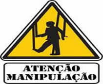A elite mundial quer nos manter burros, ignorantes e desinformados. Dessa forma, conhecimentos realmente importantes, que poderiam melhorar nossas vidas são ocultados de nós, para que possam nos manter sob controle.
A elite mundial, que é composta por um punhado de gente podre de rica, domina tudo: governos de todo o planeta, bancos e as maiores empresas.
Eles dependem da ignorância humana para continuarem mantendo suas riquezas, status social, poder político e econômico, seus privilégios, enfim para manterem o poder total.
Para isso é necessário manter a maioria da população em modo “sonâmbulo”, para não interrompermos a sua agenda ambiciosa e egoísta. E sabe-se lá o que de pior eles têm em mente!
A baixa qualidade do ensino nas escolas públicas (para não dizer péssima!)
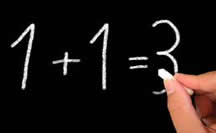Você já parou para pensar por que o ensino nas escolas públicas é de baixa qualidade?
Antigamente, a educação escolar era melhor, e, por isso, os alunos percebiam que havia pessoas controlando o mundo. O governo notou que a população não poderia ter acesso a esse tipo de conhecimento e, então, fez com que a qualidade do ensino piorasse gradativamente.
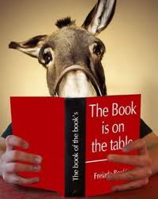Ao refletir sobre minha trajetória como estudante de escolas públicas, percebo que aprendi muito pouco. Muito pouco mesmo! Eu praticamente só saí de lá alfabetizada, ou seja, sabendo ler e escrever. Eu não adquiri conhecimentos básicos nas disciplinas essenciais para ser aprovada em um vestibular, por exemplo. Embora tenha tido aulas de inglês a partir da quinta série do ensino fundamental, eu nunca consegui evoluir em matéria de entendimento básico do idioma inglês.
Ao concluir o ensino médio, fiz um curso de inglês e, dessa vez, realmente notava que eu estava aprendendo, pois o estudo era mais estruturado. Enquanto que na escola pública, porém, terminei sem saber ABSOLUTAMENTE NADA!
Isso me fez questionar: por que na escola não nos ensinaram dessa forma? No curso, o ensino era mais claro, organizado e realmente eficaz. As escolas públicas, de fato, deixam muito a desejar, prejudicando assim a educação de todo o país. Não dá para contar somente com a escola pública para aprender. Se você quiser obter uma boa base de conhecimento, vai ter que ser por fora, ser autodidata e levar a sua educação muito a sério.
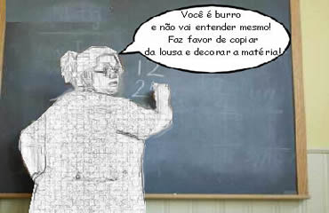Enfim, a resposta para minha pergunta — "Por que a escola pública é tão ruim?" — veio anos depois, quando descobri que o governo não está interessado em formar pessoas inteligentes. Pelo contrário, querem que a população seja ignorante e sem consciência, para que não reivindique seus direitos nem atrapalhe seus planos de permanência no poder.
É por isso que o mundo parece estar cada vez mais de cabeça para baixo: por causa de um pequeno grupo de pessoas gananciosas e sem compaixão. Elas buscam apenas alcançar e manter seus privilégios, mesmo que isso custe a vida e o sofrimento de bilhões de pessoas.
Se você perguntar para pessoas com mais idade - aqueles que nasceram mais ou menos até o ano de 1980 - eles vão confirmar para você, que no tempo deles a escola pública ensinava muito mais coisas.
Também não podemos esquecer, é claro, que uma parte da culpa é das próprias pessoas, que não buscam conhecimento. Hoje, estamos na era da informação, em que não dependemos mais totalmente da mídia corporativa para nos informar. Menos da metade da população lê livros. Não por menos, para a população carente, que, quando passa fome e luta a cada dia para sobreviver, encontra grande dificuldade sequer para se preocupar com outras coisas.
Ainda assim, essa indução programada e planejada para nos manter na ignorância e na pobreza, tanto física quanto mental e intelectual, é a principal responsável. Sem acesso a recursos básicos de vida e falta de incentivo ao conhecimento, muitas pessoas sequer percebem essa realidade. A preocupação com as necessidades básicas do dia a dia, as obrigações e o interesse em apenas aproveitar a vida com coisas fúteis, fazem com que não tenhamos previsão de mudanças tão cedo. Mas a esperança é a última que morre!
| 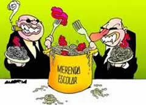 | 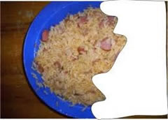 | 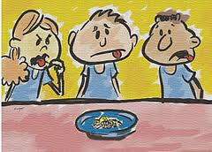 |
Descobri também uma coisa curiosa sobre os canhotos
Basta você observar o mundo e as coisas a sua volta. A mão esquerda é muito condenada. O mundo e as coisas são criados basicamente só para os destros. Destro significa o hemisfério esquerdo. Dez por cento das crianças nascem canhotas, mas elas são forçadas a serem destras. As crianças que nasceram canhotas são basicamente irracionais, intuitivas, não-matemáticas, não-eucladianas. Elas são perigosas para a sociedade. Os canhotos têm a capacidade de perceber coisas que os destros não percebem, possuem uma inteligência diferente. E sendo assim a sociedade as força de todos os modos a se tornarem destras. Isto não é apenas uma questão de mãos, é uma questão de política interna; a criança canhota funciona através do hemisfério direito. Isto a sociedade não pode permitir, isto é perigoso para a sociedade e assim ela tem que ser detida antes que as coisas atinjam outros caminhos e se perca o controle.
Quem não lembra nas gerações antigas; ou quem já não ouviu falar que antigamente em algumas décadas atrás, professores não admitiam os seus alunos ou suas crianças escreverem com a mão esquerda? Eram obrigados a escreverem com a mão direita, senão muitas eram punidas e castigadas.
Percebe como vivemos num mundo controlado? O quanto do que acreditamos realmente vem de nós, e não do que nos é imposto?
Somos obrigados a votar, mas nunca nos ensinaram sobre política na escola e nem em nenhum outro lugar, porque eles querem assim. Eles escolhem os políticos, e nós apenas somos influenciados/manipulados através de propagandas eleitorais para votarmos em quem eles querem colocar no poder.
Idiotização através da televisão
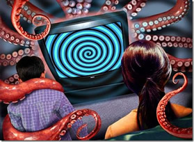A televisão, desde sua popularização, tem sido uma das mais poderosas ferramentas de comunicação e entretenimento. No entanto, seu impacto vai muito além da simples transmissão de notícias e programas de entretenimento. Ela tem sido historicamente usada como um instrumento de manipulação das massas, influenciando comportamentos, opiniões e até mesmo decisões políticas.
O Poder da Imagem e da Narrativa
A televisão combina imagem e som de maneira persuasiva, criando narrativas envolventes que podem moldar a percepção da realidade. A repetição de determinadas ideias, o sensacionalismo e a forma como as informações são apresentadas podem distorcer a compreensão do público sobre eventos e questões importantes.
A edição seletiva de imagens, a escolha das palavras e o tom de voz dos apresentadores são estratégias usadas para direcionar a interpretação dos fatos. Muitas vezes, determinadas informações são enfatizadas enquanto outras são ignoradas, criando uma visão parcial e manipulada da realidade.
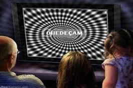Influência na Política e na Opinião Pública
Durante períodos eleitorais, a televisão se torna um campo de batalha para a disputa de narrativas. Candidatos com maior tempo de exposição costumam ter vantagem sobre os demais, e a forma como a mídia cobre determinados políticos pode definir sua popularidade. A mídia empresarista faz com que certos temas sejam amplamente discutidos enquanto outros são deixados de lado, influenciando diretamente a opinião pública.
Então, com o desenvolvimento da mídia através da TV, veio o atrofiamento físico e intelectual promovendo o caos social.
Emburrecimento programado!
Tem nas telinhas, dentro de cada casa, vários programas idiotizantes, além de anúncios, como os de humor, com piadas, para fazer o idiotizado rir de sua própria desgraça. Noticiando atritos sociais, que eles mesmos promovem, enquanto oferecem seus produtos durante intervalos. Sem falar das mensagens subliminares! Televisão, de fato, é uma máquina de fazer doido!
Como se Proteger da Manipulação
Para evitar ser manipulado pela televisão, é fundamental desenvolver o pensamento crítico. Algumas estratégias incluem:
- Buscar diferentes fontes de informação: não confiar apenas em um canal ou emissora, mas procurar diferentes perspectivas sobre um mesmo assunto.
- Analisar o discurso midiático: perceber como as informações são apresentadas e questionar se há interesses por trás da narrativa.
- Desenvolver a leitura crítica da imagem: compreender que toda edição e enquadramento podem carregar intencionalidade.
- Diversificar os meios de comunicação: além da televisão, buscar informações em livros, jornais independentes, podcasts e outras mídias.
A televisão continuará sendo um meio de grande influência, mas cabe ao espectador desenvolver mecanismos para não se tornar refém da manipulação midiática. Afinal, informação é poder, mas apenas quando consumida com consciência e análise crítica.
| 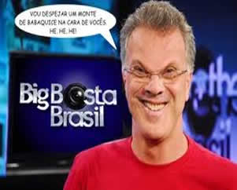 | 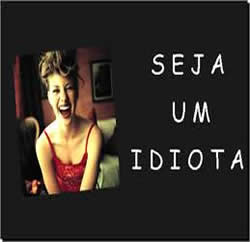 | 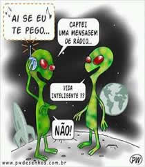 |
A TENDÊNCIA AGORA É ENRIQUECER ESTE DEVANEIO SOCIAL, INTELECTUAL, SEXUAL... E SALVE-SE QUEM PUDER!
Mudar este nosso destino está difícil, porque precisaríamos de sacrifícios. Quem ousa ir contra tudo com quase a certeza de ser apedrejado ou isolado totalmente?
| 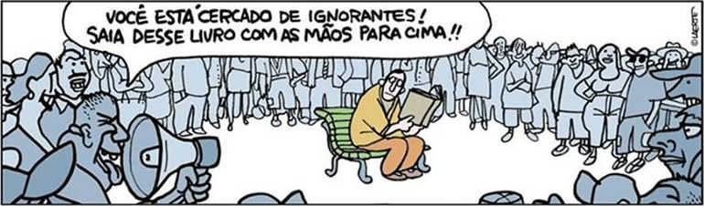 |
OS OBSTÁCULOS para se libertar são vários: drogas em geral, sejam elas lícitas ou ilícitas, como por exemplo:
- programas de TV que insistem em nos idiotizar (me recuso a dizer quais são, pois é muito evidente);
- propagandas que nos induzem ao consumo de coisas que nós não precisamos, mas ficamos infelizes por não possuí-los;
- cervejada;
- cigarro;
- junk food; ("comida lixo"), também coloquialmente, "porcaria" ou "besteira".
- drogas;
- calmantes;
- ambição desmedida;
- carga de trabalho excessiva (afinal de contas, temos que trabalhar muito para comprar o que não precisamos acima);
- desconhecimento de si mesmo;
- apego às crenças que nos ensinaram desde criança e que insistimos em achar que é verdade (pelo menos em Papai Noel deixamos de acreditar quando crescemos);
- sonambulismo (embora estejamos em movimento, encontramo-nos dormindo para a vida);
- dificuldade em assumir responsabilidade pelos próprios atos e pensamentos;
- preocupação desnecessária com a vida alheia;
- idolatria;
- desconhecimento da política do PÃO E CIRCO...
Ufa! A lista é imensa, mas vamos parando por aqui. Cada um que identifique seus obstáculos e faça a própria lista. No final das contas descobre-se que as coisas poderiam ser mais simples, mas falta-nos maturidade e boa vontade para assumirmos nossa soberania.
| 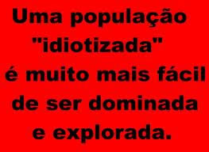 |